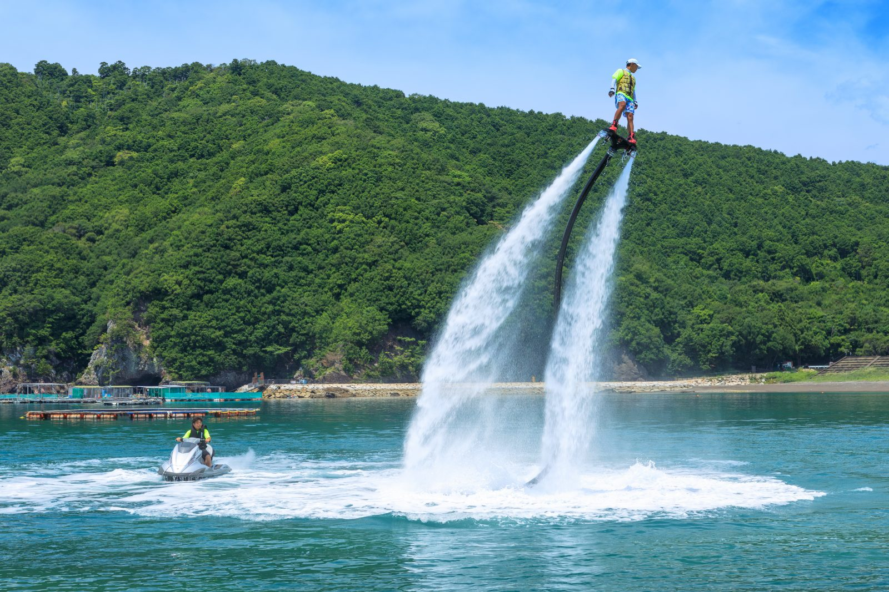
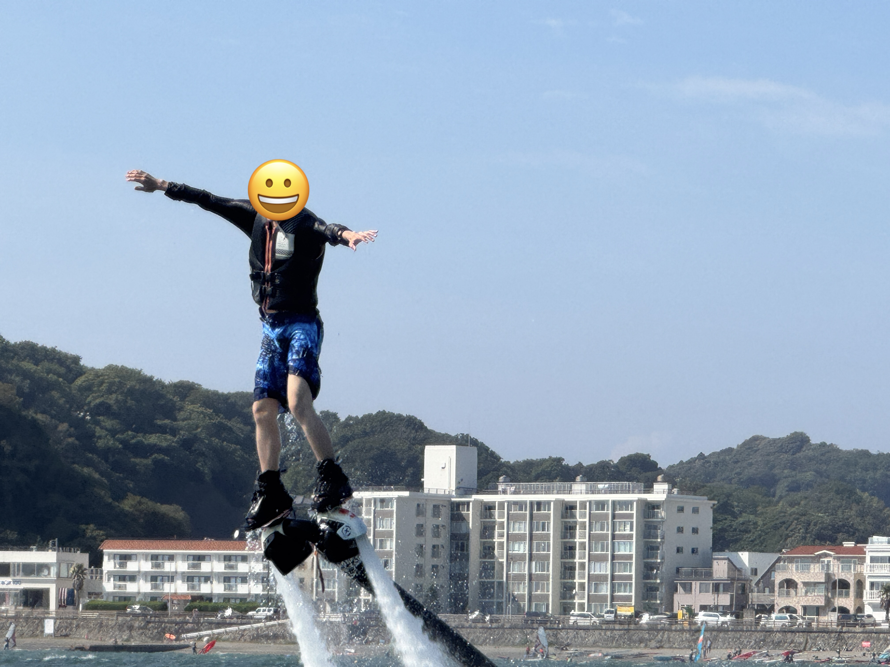
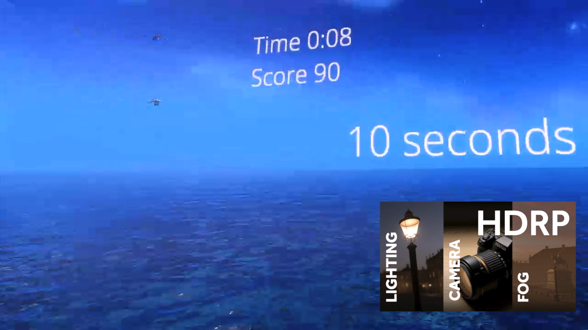
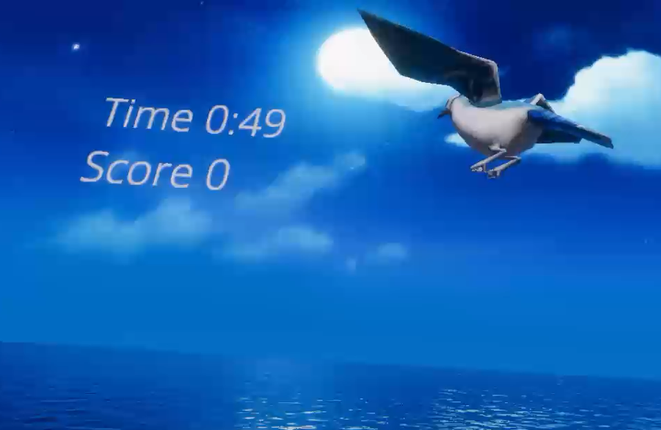

紹介動画
このゲームは無償でソースコード全文を公開しています。
https://github.com/zakky-daily/vr-flyboard よりダウンロードしてください
※再配布を禁止します

フライボードとは？ 水上バイクから噴射される水圧を利用し、足に取り付けたボードから水流を出すことで空中を自由に飛び回るマリンスポーツです。浮遊感と海上3〜5mから見る景色の圧倒感から人気急上昇中。

作るからにはリアリティーを追求したいと、実際にフライボードを体験しに行きました。
場所は神奈川県・逗子海岸。慣れるまでは大変だったけど、一度感覚を掴んでしまえば簡単に空中に浮くことができました。
めちゃくちゃ楽しかった（旅行記はこちら）

さて、体験して見た美しい景色をどのように表現しようか。
UnityのHDRPレンダリングは、ハイエンドマシーン向けに設計された、壮大な映像表現を可能にするグラッフィックス機能。
Meta QuestのビルドインはHDRPに対応していないので、Meta Horizon Linkを用いてPCから映像を出力することで実現。海と空を設定しただけで、一気に非日常感が出てきた。

ゲームシステムは、空を飛んでいる鳥に触れて友達になると、ポイントを獲得できるというもの。
（実際に鳥に触れるのが動物愛護法的に問題ないのかは置いておいて）鳥に触れられる方法って、船でも無理だし、ヘリでも無理だし、もしかしたらフライボードしかないのでは？ と思っています。
制限時間内に沢山ポイントを獲得するほどGood。
周りには建物もない。悪口を言ってくる人もいない。
あるのは、どこまでも続く海と、空と、一隻の小さなボートと、優しく見守ってくれる鳥たちだけ。
この世界で、旅人は今日も、空を渡り歩きながら自分自身を内省するのだ。